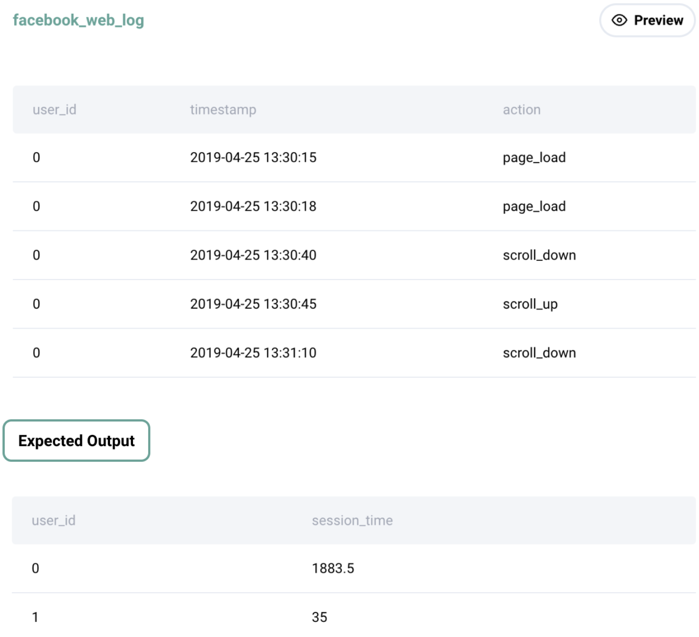

Question sourced from StrataScratch.com.
Database: MySQL
Calculate each user's average session time. A session is defined as the time difference between a page_load and page_exit. For simplicity, assume a user has only 1 session per day and if there are multiple of the same events on that day, consider only the latest page_load and earliest page_exit, with an obvious restriction that load time event should happen before exit time event . Output the user_id and their average session time.

/*
My strategy: Since the question explicitly states that each user
only has one session per date in this dataset, group by user and
date, and use conditional aggregation to get the latest page_load
(i.e. the MAX timestamp) and the earliest page_exit (i.e. the MIN
timestamp) for each date. Wrap this result set in a CTE, then
calculate the session time in seconds for each date, and calculate
the average session time for each user.
*/
WITH page_action_times AS (
SELECT user_id, DATE(timestamp) AS date,
MAX(IF(action = 'page_load', timestamp, NULL)) AS page_load_time,
MIN(IF(action = 'page_exit', timestamp, NULL)) AS page_exit_time
FROM facebook_web_log
GROUP BY user_id, DATE(timestamp)
)
SELECT user_id,
AVG(TIMESTAMPDIFF(SECOND, page_load_time, page_exit_time)) AS avg_session_seconds
FROM page_action_times
GROUP BY user_id
HAVING NOT ISNULL(avg_session_seconds);